import cv2
import numpy as np
import matplotlib.pyplot as plt
# Magic command to display inline
%matplotlib inline
# Helper function to downsample images for display
def downsample(img, size=(256, 256)):
return cv2.resize(img, size) if img.ndim == 3 else cv2.resize(img, size, interpolation=cv2.INTER_AREA)Table of contents
- View image with OpenCV: cv2.imshow()
- The image can be sliced to trim it, which is useful for focusing on specific areas of the image.
- Read a grayscale image and display it using OpenCV
- Rotate image with NumPy: np.rot90()
- We can pass arguments to np.rot90(), defaulting to 1 rotation (90 degrees), 2 rotations (180 degrees), or 3 rotations (270 degrees). The k parameter specifies the number of times to rotate the image by 90 degrees.
- Tranpose image
- ‘Plus’ image
- Flipping image
- Manually
- Vertically
- Horizontally
- Using built-in functions
- Using cv2.flip()
- Increase/Decrease brightness
- Increase brightness
- Decrease brightness
- Background subtraction (or foreground extraction)
- Manually
- Using np.subtract()
path = 'images'View image with OpenCV: cv2.imshow()
The image can be sliced to trim it, which is useful for focusing on specific areas of the image.
# Read image
image = cv2.imread(path + '/nature.jpg')
image_small = downsample(image)
# Show downsampled image and its slicing
plt.figure(figsize=(4,4))
plt.imshow(cv2.cvtColor(image_small, cv2.COLOR_BGR2RGB))
plt.title("Image (downsampled)")
plt.axis('off')
plt.show()
# Slicing the image to focus on a specific area, then downsample
image_crop = image[50:150, 500:700]
image_crop_small = downsample(image_crop)
plt.figure(figsize=(3,3))
plt.imshow(cv2.cvtColor(image_crop_small, cv2.COLOR_BGR2RGB))
plt.title("Slicing (downsampled)")
plt.axis('off')
plt.show()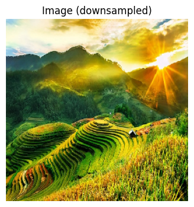
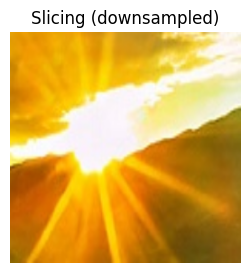
print(f'Shape of colorful image: {image.shape}')
print(f'Type of colorful image: {type(image)}')
print(f'Type of each pixel is: {type(image[0,0,0])}')Shape of colorful image: (400, 650, 3)
Type of colorful image: <class 'numpy.ndarray'>
Type of each pixel is: <class 'numpy.uint8'>Read a grayscale image and display it using OpenCV
image_gray = cv2.imread(path + '/nature.jpg', 0)
image_gray_small = downsample(image_gray)
plt.figure(figsize=(4,4))
plt.imshow(image_gray_small, cmap='gray')
plt.title("Gray (downsampled)")
plt.axis('off')
plt.show()
print(f'Shape of grayscale image: {image_gray_small.shape}')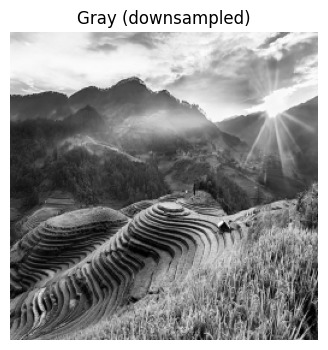
Shape of grayscale image: (256, 256)Rotate image with NumPy: np.rot90()
We can pass arguments to np.rot90(), defaulting to 1 rotation (90 degrees), 2 rotations (180 degrees), or 3 rotations (270 degrees). The k parameter specifies the number of times to rotate the image by 90 degrees.
# Convert image to RGB for display because OpenCV loads images in BGR format
image_rgb = cv2.cvtColor(image, cv2.COLOR_BGR2RGB)
image_rgb_small = downsample(image_rgb)
image_rot_90 = np.rot90(image_rgb_small, k=1)
image_rot_180 = np.rot90(image_rgb_small, k=2)
image_rot_270 = np.rot90(image_rgb_small, k=3)
image_rot_360 = np.rot90(image_rgb_small, k=4)
fig, axes = plt.subplots(2, 2, figsize=(8, 6))
axes[0, 0].imshow(image_rot_90)
axes[0, 0].set_title("Rotated 90°")
axes[0, 1].imshow(image_rot_180)
axes[0, 1].set_title("Rotated 180°")
axes[1, 0].imshow(image_rot_270)
axes[1, 0].set_title("Rotated 270°")
axes[1, 1].imshow(image_rot_360)
axes[1, 1].set_title("Rotated 360°")
for ax in axes.flat:
ax.axis('off')
plt.tight_layout()
plt.show()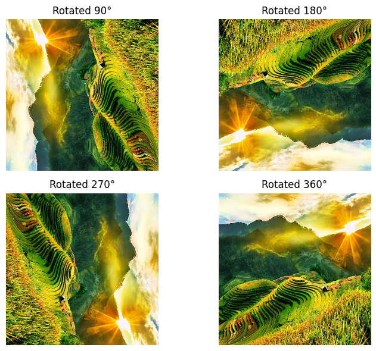
Tranpose image
image_rgb_transposed = image_rgb_small.transpose((1, 0, 2))
fig, axes = plt.subplots(1, 2, figsize=(7, 3), constrained_layout=True)
axes[0].imshow(image_rgb_small)
axes[0].set_title("Original")
axes[0].axis("off")
axes[1].imshow(image_rgb_transposed)
axes[1].set_title("Transposed")
axes[1].axis("off")
plt.show()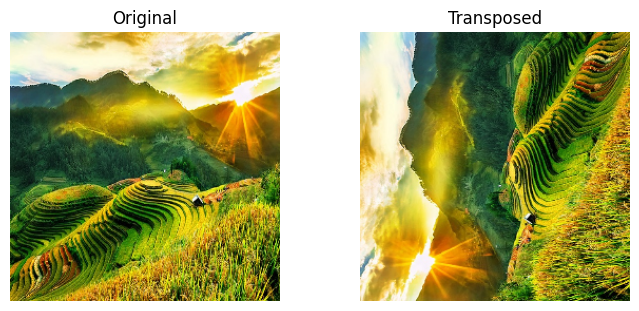
‘Plus’ image
image_1 = plt.imread(path + '/colorfull-1.jpg')
image_2 = plt.imread(path + '/colorfull-2.jpg')
# Resize image_2 to match image_1's shape
image_2_resized = cv2.resize(image_2, (image_1.shape[1], image_1.shape[0]))
image_plus = image_1 + image_2_resized
image_plus_small = downsample(image_plus)
plt.figure(figsize=(4,4))
plt.imshow(image_plus_small)
plt.axis('off')
plt.show()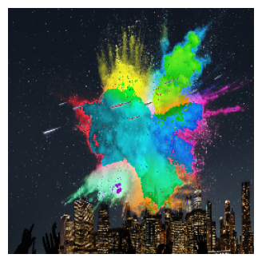
Flipping image
Manually
Vertically
img = plt.imread(path + '/nature.jpg')
img = img.astype(float)
# Take shapes (height, width, channel)
height, width, channels = img.shape
# Transform matrix (flip wrt x axis, or i.e., vertical flip)
transform = np.array([[1, 0], [0, -1]])
# Initialize output matrix with same shape as input image
output = np.zeros((height, width, channels))
# Iterate over each pixel in the original image
for h in range(height):
for w in range(width):
pixel = img[h, w, :]
new_j, new_i = transform@np.array([w, h]) + [0, height - 1]
output[new_i, new_j] = pixel
output = output.astype(np.uint8)
output_small = downsample(output)
plt.imsave(path + '/vertically_flipped.jpg', output_small)
plt.figure(figsize=(4,4))
plt.imshow(output_small)
plt.title("Flipped vertically (downsampled)")
plt.show()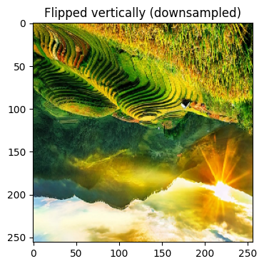
Horizontally
img = plt.imread(path + '/nature.jpg')
img = img.astype(float)
height, width, channels = img.shape
transform = np.array([[-1, 0], [0, 1]])
output = np.zeros((height, width, channels))
for h in range(height):
for w in range(width):
pixel = img[h, w, :]
new_j, new_i = transform@np.array([w, h]) + [width - 1, 0]
output[new_i, new_j] = pixel
output = output.astype(np.uint8)
output_small = downsample(output)
plt.imsave(path + '/horizontally_flipped.jpg', output_small)
plt.figure(figsize=(4,4))
plt.imshow(output_small)
plt.title("Flipped horizontally (downsampled)")
plt.show()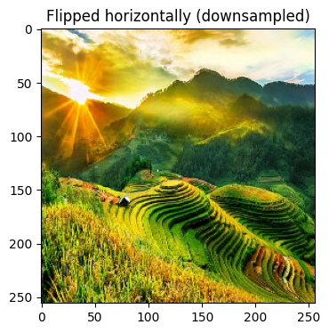
Using built-in functions
Using cv2.flip()
flipCode can be: - 0: flip vertically - 1: flip horizontally - -1: flip both vertically and horizontally
img = plt.imread(path + '/nature.jpg')
img_small = downsample(img)
fig, ax = plt.subplots(1, 4, figsize=(12, 4), constrained_layout=True)
titles = [
"Original",
"Flipped vertically",
"Flipped horizontally",
"Flipped vertically & horizontally"
]
images = [
img_small,
cv2.flip(img_small, 0),
cv2.flip(img_small, 1),
cv2.flip(img_small, -1)
]
for i in range(4):
ax[i].imshow(images[i])
ax[i].set_title(titles[i], fontsize=12)
ax[i].axis('off')
plt.show()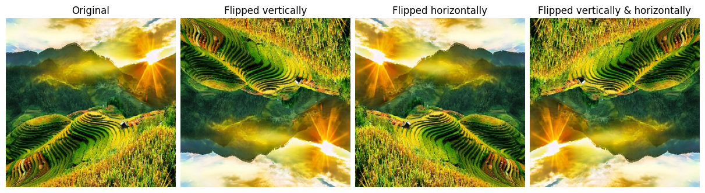
Increase/Decrease brightness
Because OpenCV images contain uint8 pixel values (range [0,255]), so we must convert to float to avoid overflow when adding or subtracting brightness values. After processing, we convert back to uint8.
We can implement in 3 ways: loop, np.clip(), and np.where(). - Example of using loop:
for i in range(image.shape[0]):
for j in range(image.shape[1]):
for k in range(image.shape[2]):
image[i, j, k] = np.clip(image[i, j, k] + brightness, 0, 255)- Example of using
np.clip()in the cell below - Example of using
np.where():
image = np.where(image + brightness > 255, 255, image + brightness)Increase brightness
image_bright_dec80 = image_rgb_small.copy()
image_bright_dec80 = image_bright_dec80.astype(float)
image_bright_dec80 -= 80
image_bright_dec80 = np.clip(image_bright_dec80, 0, 255)
image_bright_dec80 = image_bright_dec80.astype(np.uint8)
plt.imsave(path + '/decrease80_clip.jpg', image_bright_dec80)
plt.figure(figsize=(4,4))
plt.imshow(image_bright_dec80)
plt.title("Decreased 80 brightness (downsampled)")
plt.axis('off')
plt.show()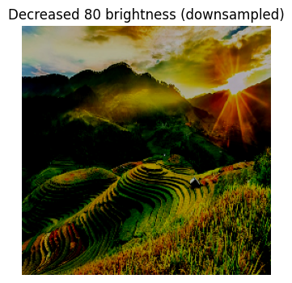
Decrease brightness
image_bright_inc80 = image_rgb_small.copy()
image_bright_inc80 = image_bright_inc80.astype(float)
image_bright_inc80 += 80
image_bright_inc80 = np.clip(image_bright_inc80, 0, 255)
image_bright_inc80 = image_bright_inc80.astype(np.uint8)
plt.imsave(path + '/increase80_clip.jpg', image_bright_inc80)
plt.figure(figsize=(4,4))
plt.imshow(image_bright_inc80)
plt.title("Increased 80 brightness (downsampled)")
plt.axis('off')
plt.show()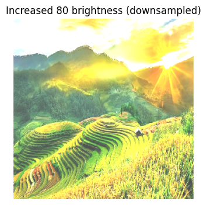
Background subtraction (or foreground extraction)
Manually
img = plt.imread(path + '/maxresdefault.jpg')
rgb8 = (img * 255.0).round().astype(np.uint8) if np.issubdtype(img.dtype, np.floating) else img
rgb8_small = downsample(rgb8)
target = np.array([19, 252, 23], dtype=np.int16)
tol = 100
diff = np.abs(rgb8_small.astype(np.int16) - target)
is_green = (diff <= tol).all(axis=2)
extracted = np.where(is_green[..., None], 0, rgb8_small).astype(np.uint8)
fig, ax = plt.subplots(1, 2, figsize=(7, 3), constrained_layout=True)
ax[0].imshow(rgb8_small); ax[0].set_title('Before'); ax[0].axis('off')
ax[1].imshow(extracted); ax[1].set_title('Extracted'); ax[1].axis('off')
plt.show()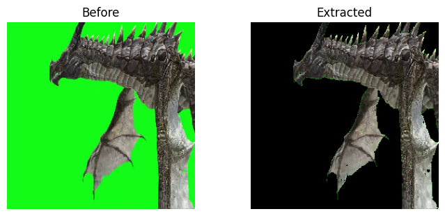
Using np.subtract()
import cv2
import numpy as np
import matplotlib.pyplot as plt
# Magic command to display inline
%matplotlib inline
# Load images
image_city = plt.imread('images/colorfull-2.jpg')
dragon_with_background = plt.imread('images/maxresdefault.jpg')
background = plt.imread('images/background.jpg')
# Ensure all images are uint8 and same shape
def to_uint8(img):
if np.issubdtype(img.dtype, np.floating):
img = (img * 255.0).round().astype(np.uint8)
return img
image_city = to_uint8(image_city)
dragon_with_background = to_uint8(dragon_with_background)
background = to_uint8(background)
image_city = downsample(image_city)
dragon_with_background = downsample(dragon_with_background)
background = downsample(background)
dragon_with_background = cv2.resize(dragon_with_background, (image_city.shape[1], image_city.shape[0]))
background = cv2.resize(background, (image_city.shape[1], image_city.shape[0]))print(image_city.shape, dragon_with_background.shape)(256, 256, 3) (256, 256, 3)dragon_with_background = cv2.resize(dragon_with_background, (image_city.shape[1], image_city.shape[0]))
background = cv2.resize(background, (image_city.shape[1], image_city.shape[0]))print(image_city.shape, dragon_with_background.shape)(256, 256, 3) (256, 256, 3)fig, ax = plt.subplots(1, 2, figsize=(7, 3), constrained_layout=True)
ax[0].imshow(image_city)
ax[0].set_title("City")
ax[0].axis('off')
ax[1].imshow(dragon_with_background)
ax[1].set_title("Dragon with background")
ax[1].axis('off')
plt.show()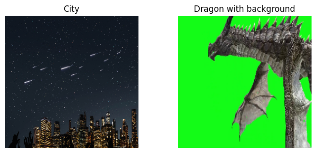
# Compute absolute difference between dragon_with_background and background
diff = cv2.absdiff(dragon_with_background, background)
# Create mask: pixels with large difference are foreground (dragon), small difference are background
threshold = 100
mask = np.any(diff > threshold, axis=2)
# Create output: keep dragon where mask is True, else set to transparent (or black)
dragon_fg = np.zeros_like(dragon_with_background)
dragon_fg = np.where(mask[..., None], dragon_with_background, 0)
plt.imshow(dragon_fg)
plt.title("Dragon without background (downsampled)")
plt.axis('off')
plt.show()
# Overlay dragon foreground onto city image using mask
output = np.where(mask[..., None], dragon_fg, image_city)
plt.imshow(output)
plt.title("Dragon inside the city (downsampled)")
plt.axis('off')
plt.show()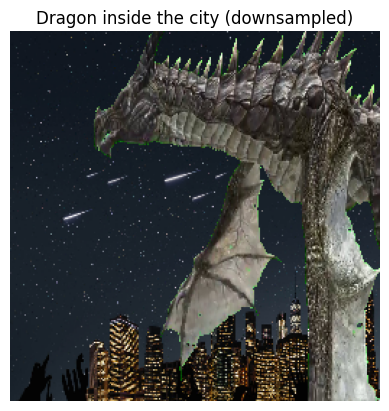
# import cv2, matplotlib.pyplot as plt
# # Tạo đối tượng VideoCapture để đọc video từ camera
# cap = cv2.VideoCapture(0) # Số 0 thể hiện camera mặc định, nếu có nhiều camera, hãy chọn số thích hợp.
# # Kiểm tra xem camera có mở thành công hay không
# if not cap.isOpened():
# print("Không thể mở camera.")
# exit()
# # Đọc khung hình từ camera
# ret, frame = cap.read()
# # Kiểm tra xem việc đọc khung hình có thành công hay không
# if not ret:
# print("Không thể đọc khung hình.")
# exit()
# # Giải phóng tài nguyên
# cap.release()
# # Hiển thị khung hình inline bằng matplotlib
# plt.imshow(cv2.cvtColor(frame, cv2.COLOR_BGR2RGB)) # Chuyển đổi từ BGR sang RGB, vì OpenCV sử dụng BGR
# plt.axis('off') # Tắt trục
# plt.title("Camera Frame")
# plt.show()